Our 2023 Community Partners
It takes a village to create meaningful change. Engineering Good is proud to partner with these 6 communities that share our mission of using technology for good!
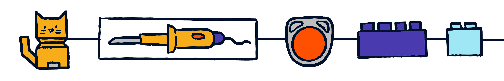
Muscular Dystrophy Association Singapore (MDAS)
Join representatives from Muscular Dystrophy Association Singapore (MDAS)— Timothy, Saifudeen, Boon Keng, and Shalom—to make the arts more accessible for all!
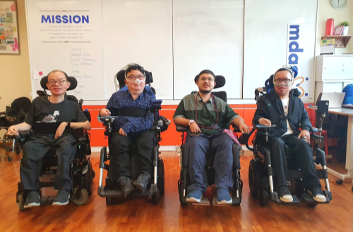
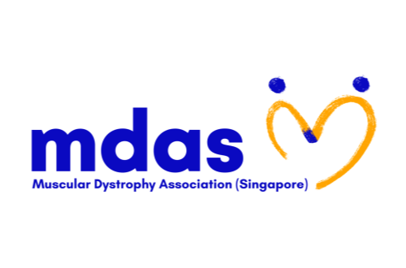
These four friends have a keen interest in developing assistive technology solutions for their community, participating in T4G for the third time. Each of them brings a unique perspective to innovating assistive technology: Timothy has a background in product design and innovation. Saifudeen is a graphic designer and artist. Boon Keng is a motivational speaker, digital marketer, and board member of MDAS. Shalom is an award-winning disability advocate and is currently a community partnership executive at K9 Assistance.
Timothy and Saifudeen are participants of the Bridge programme at MDAS, which aims to nurture and build the fundamental capacity of individuals with MD, gearing them towards pre-vocational training and eventually employment. As participants in the arts programme, they nurture a shared passion for the arts, with an impressive array of talents, including illustration, storytelling, painting, and design between them. Some challenges they face include weak upper body strength, making it difficult for them to paint and use conventional art and design tools.
Innovators will work with the group to explore fun ways of making art accessible for people living with Muscular Dystrophy.
Alister Ong
Join Alister in making commuting easier for all wheelchair users in Singapore!
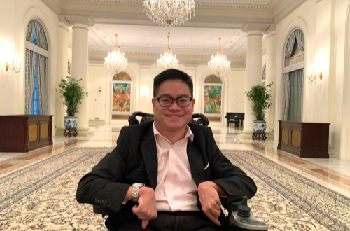
Merging valuable experience with a degree in economics, Alister is a globally recognised disability advocate. He has given talks at J.P Morgan, Bloomberg, Boehringer Ingelheim, LinkedIn, Uber, Sleek, and more. He aims to facilitate positive growth by providing a robust Diversity and Inclusion Strategy through thought leadership and change management.
Alister is a recipient of the Goh Chok Tong Enable Award and currently leads the Diversity Equity Inclusion Client Solutions team at Michael Page. He is also a Keynote Speaker for the National Council of Social Services (NCSS) and the Purple Parade Vice Chairperson.
Alister lives with Cerebral Palsy (CP) which affects movement and posture. CP is caused by illness or injury to the brain before or during birth, or early in life. He hopes to see more barrier-free access paths and signage for wheelchair users in Singapore. As a motorised wheelchair user, his commute to the Central Business District is fraught with environmental barriers, such as the lack of ramps, small curbs, the inability to shelter himself from the rain, and automatic gantries that require him to tap a card.
Innovators will work with Alister to create assistive devices that can reduce commuting barriers, allowing people with physical disabilities to spend quality time in the office.
St. Andrew's Autism Centre (SAAC)
Join St. Andrew’s Autism Centre (SAAC) in making hydroponics farming more ASD-friendly and inclusive for all!
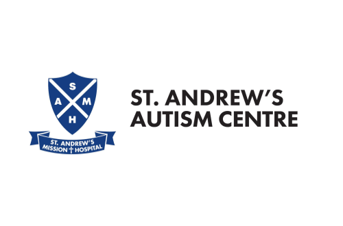
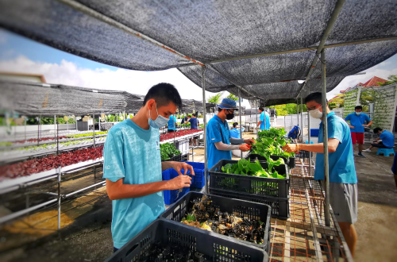
SAAC provides education, training, care, and residential services for individuals with moderate to severe autism. They also equip families and caregivers with skills and engage in public education and outreach for an inclusive society.
SAAC’s Dignity of Work program teaches horticulture tasks such as germination, transplanting, and harvesting to vocational and pre-vocational students and adult clients. This programme cultivates valuable life and work skills like teamwork and scheduling. The produce is sold to restaurants and families, giving clients a chance to contribute to society.
Maintaining and caring for a hydroponics farm is not easy. Persons with autism may face additional challenges in communication and social interaction, sensitivity to sensory stimulation, and repetitive behaviour. To facilitate learning, the hydroponics farm process is broken down into systematic steps.
Innovators will explore solutions with SAAC to make hydroponics farming more ASD-friendly and create a more inclusive industry.
MINDS
Join MINDS in making the food and beverage industry more open and accessible to PWIDs!
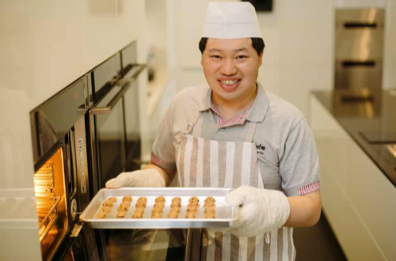
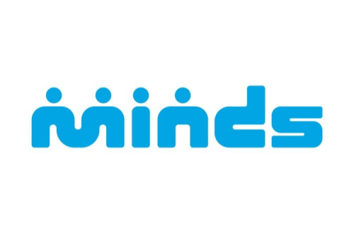
MINDS is a non-profit organisation dedicated to providing a wide range of services for persons with intellectual disabilities (PWIDs) and their families, aimed at helping them participate in society. MINDS believes that every individual with special needs has innate talents and strengths that can be nurtured.
MINDS Bakers started as a therapy program designed to improve cognitive skills and promote social integration, but it has now grown into a thriving social enterprise that offers employment and training opportunities for adults with intellectual disabilities who have a passion for baking. Certified bakers create sweet treats for various events, including corporate events, birthdays, and weddings. The goal of MINDS Bakers is to empower individuals with intellectual disabilities, provide them with a supportive work environment, and help them develop valuable skills in the food and beverage industry.
During discussions on how to better adapt processes for PWIDs, the staff at MINDS Bakers sought to simplify various tasks throughout the baking process, such as measuring cookie packages, which currently requires a firm grasp of numeracy.
Innovators will create assistive devices that complement the bakery’s standard operating procedures (SOPs) and the talents of the MINDS Bakers, with the aim of making the food and beverage industry more open and accessible to PWIDs.
Zing Media
Join Zing Media in providing more opportunities in the film industry for persons with physical disabilities!
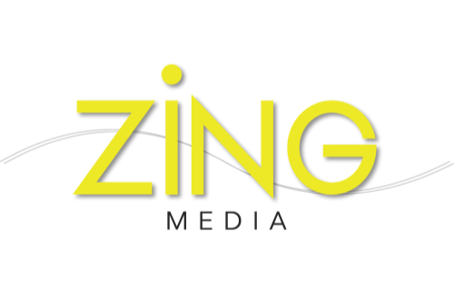
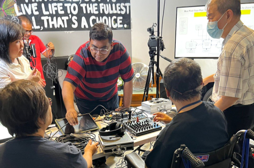
Zing Media has partnered with SG Enable to provide a media course to train persons with disabilities (PWDs) in areas such as producing, videography, video editing, and camera operation. These aspiring filmmakers include Pua Kia Fong, George Kanapathy, and Sereen Cheng. This trio shares the same aspiration of becoming camera operators in the film industry.
Operating a camera requires technical expertise, meticulousness, and excellent hand-eye coordination. The role can also be physically demanding—moving heavy equipment and enduring long hours on set. Therefore, people with physical disabilities have often been overlooked for this role, as their limited movement makes it difficult to move the camera and capture footage from different angles.
Innovators will work with aspiring creatives to make camera operating more accessible and increase job opportunities in the film industry for persons with physical disabilities!
Inclus
Join Inclus in helping PWDs thrive at work and find greater employment opportunities!
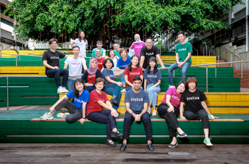
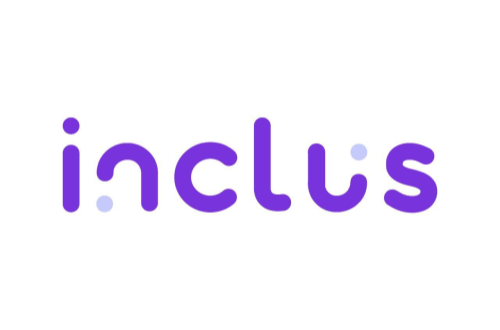
Inclus is a platform that aims to promote inclusive hiring practices and support persons with disabilities in achieving their full potential.
To enhance support for persons with disabilities in the workplace, Inclus has developed a mobile app that is designed to help track goals and tasks related to work and life skills. The app includes features such as emotional check-ins, access to a community of other people with disabilities and professionals, and the ability to receive virtual support from Inclus’s professionals. The app also includes automated features such as reminders and strategies to help people with disabilities navigate their work environment more effectively.
To make the app more accessible and relevant for people with disabilities, Inclus hopes to create a more accessible user interface and user experience.
Innovators will support Inclus in serving more PWDs in Singapore’s workforce, while learning valuable accessible design principles and UI/UX skills!